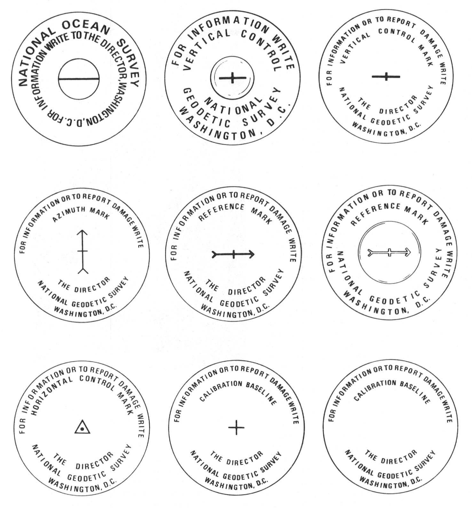
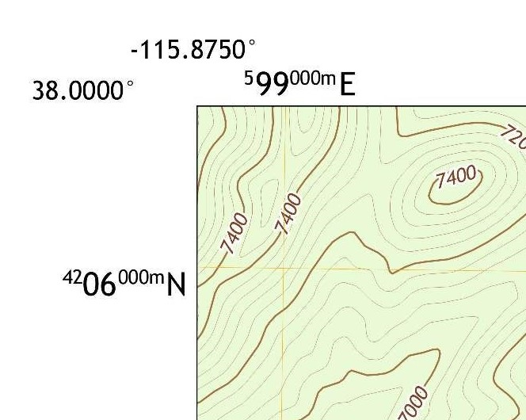

Contents
- What Is GIS?
- Coordinate Reference Systems — The Big Picture
- Datums: Modeling the Shape of the Earth
- Geographic vs. Projected Coordinate Systems
- EPSG, WGS, NAD — What the Acronyms Actually Mean
- Where Does a CRS Actually Live? Environment vs. File vs. Layer
- Diagnosing & Repairing CRS Mismatches
- Reprojecting vs. Redefining — Getting Layers to "Snap" Together
- How Different Environment Types Handle CRS (General Categories)
- Surface Adjustment Factor (Combined Scale Factor)
- How Different Industries Use GIS
- Quick-Reference Glossary
- Index & Sources
What Is GIS?
A Geographic Information System (GIS) is technology for creating, managing, analyzing, and mapping data by connecting location to descriptive information. Every GIS answers the same basic question over and over: "what is at this location, and what do we know about it?" — then lets you query, combine, and visualize the answers across thousands of locations at once.
Vector vs. Raster — the two data models
| Vector | Raster | |
|---|---|---|
| Structure | Discrete features: points, lines, polygons | A grid of cells (pixels), each holding one value |
| Good for | Parcels, roads, utility lines, buildings — things with a crisp boundary | Continuous surfaces — elevation, temperature, imagery, land cover |
| Carries attributes via | An attribute table, one row per feature | The cell value itself (and often a lookup/legend) |
| Common formats | Shapefile, GeoPackage, geodatabase feature class | GeoTIFF, IMG, DEM |
Layers
A GIS map is built from layers — separate thematic datasets (parcels, roads, flood zones, aerial imagery) stacked and drawn together. Each layer is independent: it can be turned on/off, symbolized differently, and — critically for this guide — can carry its own coordinate reference system, reconciled with the others at display time.
Attribute data
Every spatial feature (a point, line, or polygon) is paired with non-spatial attribute data in a table — a road's name and speed limit, a parcel's owner and assessed value. The geometry answers "where," the attributes answer "what."
Feature classes, shapefiles, geodatabases
A shapefile isn't one file — it's a set of files (.shp
geometry, .dbf attributes, .shx index, and critically
.prj — the CRS definition) that together form one feature class
(one theme of features, all the same geometry type). A geodatabase is a
container that holds many feature classes and tables together, often adding relationships,
domains, and topology rules a loose shapefile can't.
Coordinate Reference Systems — The Big Picture
This is the concept behind almost every "why doesn't this line up" problem in GIS, so it's worth building the mental model carefully before anything else.
The Earth is a lumpy, roughly spherical 3D object. A map is flat. You cannot represent a
curved surface on a flat one without stretching, skewing, or tearing it —
some distortion is mathematically unavoidable. A Coordinate Reference System (CRS)
is the complete rulebook that says exactly how a set of numbers (like 34.05, -118.24
or 6,481,203, 1,842,991) maps to one specific real-world location, including which
distortions were accepted and where.
A CRS is always a bundle of (1) a datum — the model of the Earth's shape and a fixed reference point — plus (2) a coordinate system type (geographic or projected) and, if projected, (3) a specific projection method and units. Two files can both be "correct" and still not overlay, because they're using different bundles.
fits this...
flattens this...
Datums: Modeling the Shape of the Earth
A datum is a reference framework: it picks a specific mathematical ellipsoid (a smooth, squashed sphere that approximates Earth's shape) and pins it to the real Earth at a defined origin and orientation. Everything downstream — every coordinate — is measured relative to that framework.
Ellipsoid vs. geoid
The geoid is Earth's true, irregular shape — the surface of equal gravitational potential that mean sea level actually follows, bumpy because Earth's mass isn't evenly distributed. The ellipsoid is the smooth mathematical stand-in used for coordinate math, chosen to fit the geoid as closely as practical for a given region or for the whole globe.
Horizontal vs. vertical datums
These are independent choices that are easy to conflate: a horizontal datum (e.g. NAD83, WGS84) governs latitude/longitude positioning. A vertical datum (e.g. NAVD88, NGVD29) governs elevation — measured from a different reference (a geoid model or a tidal benchmark, not the ellipsoid). A file can have the right horizontal datum and the wrong vertical one, or vice versa.
The datums you'll actually run into
| Datum | Established | Basis | Notes |
|---|---|---|---|
| NAD27 | 1927 | Clarke 1866 ellipsoid, single ground origin at Meades Ranch, Kansas | Legacy — pre-satellite, regionally distorted by up to several meters |
| NAD83 | 1983 (multiple later realizations) | GRS80 ellipsoid, Earth-centered, satellite-derived | Modern standard for US/Canada/Mexico surveying and most state plane systems |
| WGS84 | 1984 (updated realizations since) | WGS84 ellipsoid, Earth-centered | Global military/GPS standard — what your phone's GPS actually broadcasts in |
NAD83 and WGS84 are often treated as interchangeable — and for most everyday mapping they're close enough to ignore. But they are not identical: they've diverged by roughly 1-2 meters in North America due to different realizations and real tectonic plate motion since 1983. For sub-meter precision work (survey, construction stakeout), that gap matters.
Geographic vs. Projected Coordinate Systems
Every CRS is one of these two types:
- Geographic Coordinate System (GCS) — latitude/longitude on the curved ellipsoid itself. Units are angular (degrees). Nothing has been flattened yet.
- Projected Coordinate System (PCS) — the geographic coordinates have been run through a mathematical projection onto a flat plane. Units are linear (meters or feet), and the result is a straight, square grid.
Angular units (degrees)
Curved graticule follows the globe
e.g. WGS84 (EPSG:4326)
transforms
Linear units (meters or feet)
Straight, square grid on a flat plane
e.g. UTM Zone, State Plane (EPSG:26914...)
Colloquially, a "grid map" almost always just means a projected coordinate system — the straight grid lines (UTM grid, State Plane grid) are simply what a projection looks like once it's flattened. There isn't a separate third category; "grid" describes a visual/ structural property that projected systems have and geographic systems don't.
Every projection trades off distortion — never eliminates it
| Projection family | Preserves | Sacrifices |
|---|---|---|
| Conformal | Local angles and shapes | Area and distance |
| Equal-area | Relative size/area | Angles and shape |
| Equidistant | Distance from a specific point or line | Everything else, away from that point/line |
| Compromise | A moderate balance of all properties | Perfection in any one — good for whole-world reference maps |
Choosing a projection is choosing which distortion you can live with, based on your map's extent, scale, and purpose — the goal is minimizing distortion where it matters most for your use case, not eliminating it everywhere (impossible).
EPSG, WGS, NAD — What the Acronyms Actually Mean
| Acronym | Stands for | What it actually is |
|---|---|---|
| EPSG | European Petroleum Survey Group | A registry of standardized CRS codes (e.g. EPSG:4326, EPSG:26914). Originated in the 1980s oil & gas industry, which needed consistent geodetic parameters for exploration crossing international borders. Now maintained by the IOGP, but the "EPSG code" name stuck industry-wide as the universal shorthand for "which CRS." |
| WGS | World Geodetic System | A global geodetic standard maintained by the US National Geospatial-Intelligence Agency (formerly DMA). WGS84 (the 1984 realization, since refined) is the reference frame GPS satellites themselves broadcast in — it's the closest thing to a universal default. |
| NAD | North American Datum | The geodetic reference system for the continental control network across the US, Canada, and Mexico. NAD27 (1927) was ground-survey based; NAD83 (1983) rebuilt it on satellite geodesy and remains the standard for most US state/local coordinate systems today. |
The throughline: all three exist because different communities (oil & gas, military/GPS, continental surveying) each needed a precise, shared, unambiguous way to say "this exact spot on Earth" — and each built their own standard before anyone unified them. That's also why so many overlapping systems still coexist today.
Where Does a CRS Actually Live? Environment vs. File vs. Layer
This is the question behind most real-world CRS headaches, including CAD-to-GIS exports that land in the wrong place.
| CAD-style environment | Desktop-GIS-style environment | |
|---|---|---|
| CRS scope | One working coordinate system for the entire drawing/file | Each layer carries its own CRS independently |
| If undefined | Coordinates are just raw numbers — often a local/arbitrary design origin, not a real geographic location at all | The app typically forces you to specify or guess a CRS on import — silent guesses are the danger point |
| Reconciling multiple sources | Usually manual — everything gets drawn/translated into the one working system by the user | Automatic, on-the-fly reprojection for display; source files aren't altered unless you explicitly export/transform |
A CAD design file frequently uses local, project-specific coordinates (e.g.
an arbitrary origin near 0,0, or "ground" coordinates scaled for construction
convenience) that were never true geographic coordinates in the first place. When that file is
exported to a shapefile with no (or an incorrect) CRS tag, the receiving GIS either flags it as
undefined or — worse — silently assumes a default CRS that's wrong. The result: your CAD
elements land somewhere on Earth, just not where you expect, because the numbers were never
claiming to be real-world coordinates to begin with.
Diagnosing & Repairing CRS Mismatches
Every mismatch symptom points to a specific likely cause and fix. Work through this before reprojecting blindly:
Define (a.k.a. "assign") tells the software what CRS the existing coordinates are already in — it changes metadata only, the numbers never move. Use this when a file's CRS is missing or mislabeled. Reproject (a.k.a. "transform") mathematically converts coordinates from one CRS into another — the numbers change. Use this when the file's CRS is correctly known but you need it in a different system. Reprojecting a file that actually just needed a correct CRS definition moves it to a confidently wrong location — this is the single most common CRS mistake.
A practical checklist
- Check what CRS each file/layer actually claims (for a shapefile, that's the
.prjsidecar file — if it's missing, the shapefile has no CRS at all). - Check units explicitly — feet vs. meters mismatches look exactly like "wrong scale" symptoms.
- Sanity-check the coordinate values themselves: geographic coordinates are small (roughly -180 to 180 / -90 to 90); projected coordinates are large numbers in the thousands-to-millions, and their magnitude is a strong clue to which zone/system they belong to.
- For a CAD export specifically: confirm with whoever produced the design file what coordinate system (if any) the "ground" or "design" coordinates were actually meant to represent — this is metadata that often only exists in someone's head, not in the file.
Reprojecting vs. Redefining — Getting Layers to "Snap" Together
Once you know a mismatch is a genuine CRS difference (not a missing definition), reconciling two layers means picking one target CRS and getting everything into it — either temporarily (on-the-fly, for display only) or permanently (an explicit transform/export).
On-the-fly vs. permanent
On-the-fly reprojection is what most modern GIS does automatically: it displays every layer correctly aligned in the project's CRS without touching the source files' actual stored coordinates. Permanent reprojection physically rewrites a file's coordinates into a new CRS — needed when you're handing data to a system (or a person) that doesn't reproject on the fly, like many CAD environments.
Going from NAD27 to NAD83, for example, isn't a single fixed formula — several grid-shift/transformation methods exist with different accuracy characteristics for different regions. Picking the wrong one silently introduces meters of error that look identical to "it worked" until you check against a known-accurate reference point.
Overlay the result against one layer you already trust (a basemap, a known survey point). "The software didn't error" is not the same as "it's actually correct."
How Different Environment Types Handle CRS (General Categories)
Kept deliberately conceptual — these are behavioral categories, not a tutorial for any specific product, since the same pattern shows up across many tools in each category.
| CAD-oriented (design software) | Desktop GIS | Consumer/web mapping | |
|---|---|---|---|
| CRS granularity | One per file/environment | One per layer, plus a project display CRS | Fixed — not user-configurable |
| If undefined | Treated as arbitrary local coordinates, no error raised | Usually prompts you to specify, or flags "unknown" | Not applicable — there's no undefined state to hit |
| Typical native CRS | Whatever the designer set up — often a local/ground system | Varies by project; commonly a regional projected system | Almost always WGS84 (geographic) or Web Mercator (projected, EPSG:3857) |
| Reprojection | Usually manual/explicit | Automatic on-the-fly, plus explicit transform tools | Invisible — handled internally, no user control |
The practical upshot: exporting from a CAD-oriented tool into a GIS-oriented tool crosses from a world where CRS is often implicit/optional into a world where it's mandatory and explicit — that seam is where most mismatches are born.
Surface Adjustment Factor (Combined Scale Factor)
Even with a perfectly matched CRS, a distance you measure on the physical ground and the same distance computed from map coordinates will differ slightly — because of two compounding effects.
Combined Scale Factor = Elevation Factor × Grid Scale Factor
Elevation factor accounts for your site being above (or below) the ellipsoid's reference surface — ground distances at elevation are physically longer than the equivalent ellipsoid distance. Grid scale factor accounts for the projection's own distortion at that specific location within its zone.
Why it matters: in civil design and construction, a distance measured directly on-site ("ground distance") will not match the same distance computed from projected "grid" coordinates unless this factor is applied. For short distances at low elevation the gap is negligible; for long corridors or high-elevation sites, it accumulates into real, costly error — which is exactly why civil/survey deliverables often explicitly state whether their coordinates are "ground" or "grid," and why reconciling a CAD "ground" coordinate system with a GIS "grid" system is its own common mismatch category, distinct from a wrong datum or projection.
How Different Industries Use GIS
Transportation / civil engineering
Corridor and alignment design, drainage and hydraulic modeling, pavement and asset management, and increasingly, feeding CAD design deliverables into enterprise GIS asset-management systems for the life of the infrastructure after construction — which is exactly where the CAD-to-GIS CRS handoff problem from earlier sections shows up in daily practice.
Surveying
Surveyors maintain and extend geodetic control networks — physical benchmark monuments with precisely known coordinates that everything else gets tied back to — and produce the legal boundary descriptions that property records depend on. Their work is the ultimate source of "ground truth" that datums and adjustment factors exist to faithfully preserve.

Military
Terrain analysis, logistics, and targeting rely heavily on the Military Grid Reference System (MGRS) — a global system built directly on top of the UTM projected grid, letting any location be expressed as a compact alphanumeric string instead of long coordinate numbers. It's a direct, practical descendant of the geographic-vs-projected distinction from Section 4.

Quick-Reference Glossary
| Term | One-line definition |
|---|---|
| CRS | The complete rulebook mapping coordinate numbers to real-world locations: datum + coordinate system type + (if projected) projection + units |
| Datum | A reference ellipsoid pinned to the Earth at a defined origin/orientation |
| Ellipsoid | The smooth mathematical shape standing in for the Earth's true surface |
| Geoid | The Earth's true, irregular, gravity-based shape |
| Geographic CS | Lat/long on the curved ellipsoid; angular units (degrees) |
| Projected CS ("grid") | Geographic coordinates flattened via a projection; linear units (m/ft) |
| EPSG code | A standardized numeric ID for one specific CRS, e.g. EPSG:4326 |
| WGS84 | The global datum GPS itself uses |
| NAD83 | The modern North American continental datum |
| Define / Assign | Label existing coordinates with their correct CRS — numbers don't move |
| Reproject / Transform | Mathematically convert coordinates into a different CRS — numbers change |
| Combined Scale Factor | Elevation factor × grid scale factor — reconciles ground vs. grid distance |
| MGRS | Military Grid Reference System — a compact alphanumeric addressing scheme built on UTM |
Which CRS problem do I have? (compressed)
| Symptom | Fix |
|---|---|
| Lands in the ocean / wrong continent | Check axis order; assign the correct source CRS |
| Close but offset meters–km | Wrong datum or wrong zone → reproject correctly |
| Right shape, wrong size | Unit mismatch or ground-vs-grid → check units / scale factor |
| "Unknown"/undefined CRS on import | Define (don't reproject) — confirm the real source system first |
Index & Sources
Index
A
- Attribute data / attribute table — see Attribute data
C
- Combined Scale Factor — see Surface Adjustment Factor
- CRS environments (CAD vs. GIS) — see How Different Environment Types Handle CRS
- CRS mismatches, diagnosing — see Diagnosing & Repairing CRS Mismatches
D
- Datums — see Datums: Modeling the Shape of the Earth
- Define vs. reproject — see Reprojecting vs. Redefining
E
- Ellipsoid vs. geoid — see Ellipsoid vs. geoid
- EPSG codes — see EPSG, WGS, NAD
F
- Feature classes, shapefiles, geodatabases — see Feature classes, shapefiles, geodatabases
G
- Geographic vs. projected coordinate systems — see Geographic vs. Projected Coordinate Systems
- GIS by industry — see How Different Industries Use GIS
H
- Horizontal vs. vertical datums — see Horizontal vs. vertical datums
L
- Layers — see Layers
M
- Military GIS / MGRS — see Military
N
- NAD83 — see The datums you'll actually run into
O
- On-the-fly vs. permanent reprojection — see On-the-fly vs. permanent
P
- Projection trade-offs — see Every projection trades off distortion
S
- Scale factor — see Surface Adjustment Factor
- Shapefiles — see Feature classes, shapefiles, geodatabases
- Surveying, GIS in — see Surveying
T
- Transportation / civil engineering — see Transportation / civil engineering
- Troubleshooting checklist — see A practical checklist
V
- Vector vs. raster — see Vector vs. Raster — the two data models
W
- WGS84 — see The datums you'll actually run into
- Where a CRS lives — see Where Does a CRS Actually Live?
Sources & Further Reading
- Open Geospatial Consortium — OGC geospatial & CRS standards
- IOGP — EPSG Geodetic Parameter Registry
- National Geodetic Survey — Geodetic control, datums & benchmarks
- U.S. Geological Survey — Topographic mapping & coordinate systems
Image Credits
- Standard US National Geodetic Survey benchmark disks — NOAA / Wikimedia Commons (public domain)
- USGS topo map showing lat/long & UTM grid overlay — USGS.gov (public domain)